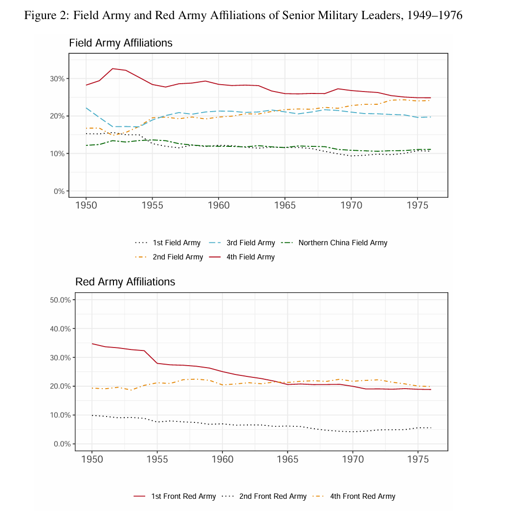

Chapter 4 数据与方法
组织史的档案：《中国人民解放军军事组织史》
1927-1976的对于15000人的88000条任命记录
4.1 测量军队派系联盟
军事精英在内战时期的部队归属。
认为一名军事精英与某个野战军有联系：如果他在这个野战军工作了两个月以上。对于多个野战军都服役过的（极少数），派系认定为服役时间最长的。
用同样的方法，对1927-1937年的方面军也进行了划分。
尽管在同一个部队不一定就关系好，但是作者觉得这无所谓。
4.2 一些patterns

对毛泽东来说，尽管四野是嫡系，但二野三野的人马也慢慢提拔到了高层。
尽管红一方面军是嫡系，但是建国后，慢慢也被其他方面军的人马赶超了。
毛泽东居然驱逐了自己的核心力量。